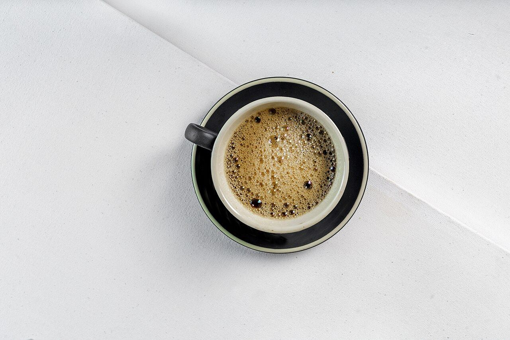
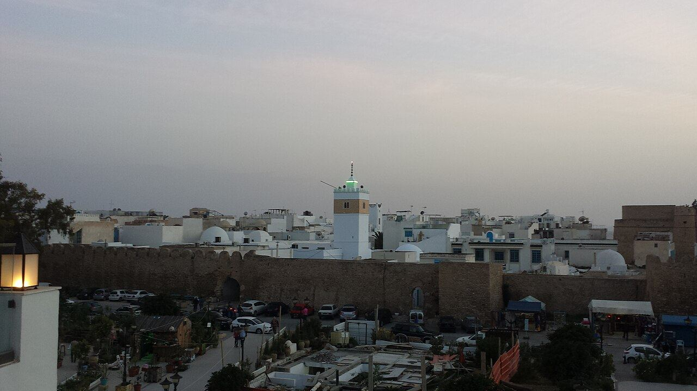
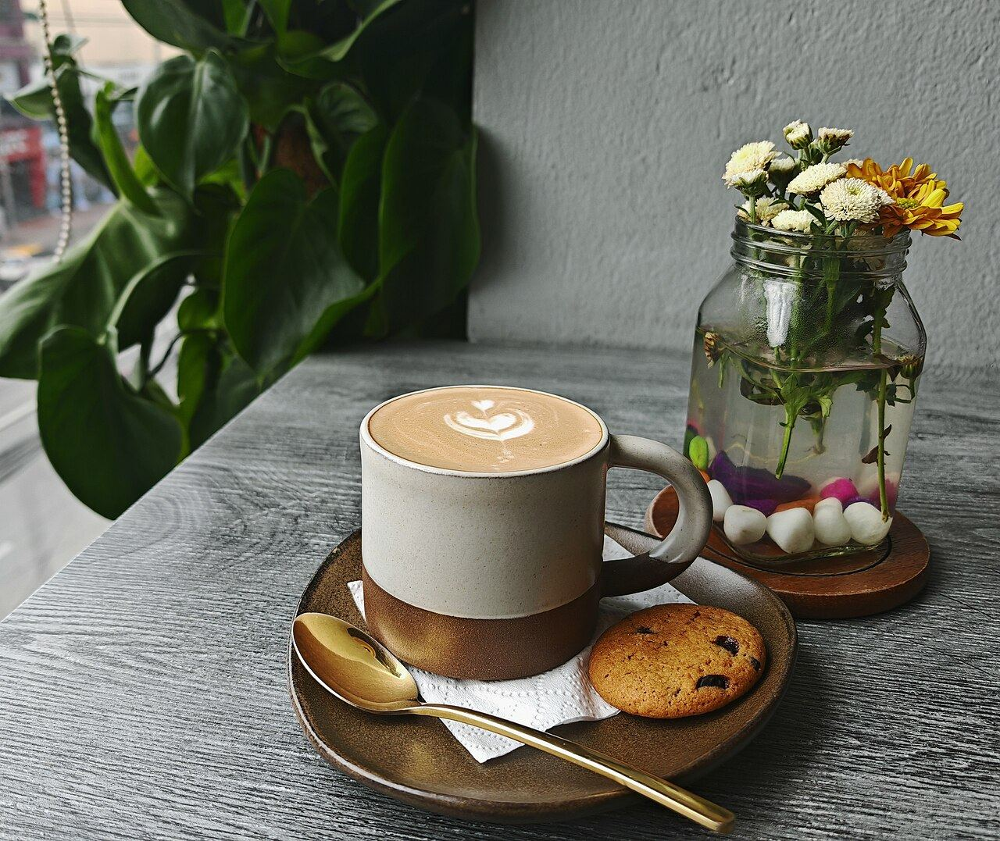

Expresso
Le classique du matin.
Carte en ligne— DT à confirmer

Expresso, cappuccino, crêpes, glaces et jus frais à petit prix. Plus de 1 100 avis clients en ligne.
Sur l’avenue de la République, Bridge Café est une halte simple et conviviale pour un café, un goûter ou un petit-déjeuner.
Cités en ligne : expresso, cappuccino, crêpes, glaces, jus de fruits, omelettes. Horaires d’ouverture à confirmer.

Commande envoyée sur WhatsApp, prête à votre arrivée.
Carte et prix sur chaque table, modifiables en 1 minute.
La demande de table arrive pré-remplie ; vous confirmez quand vous êtes disponible.
Horaires, accès, plats du jour : les questions fréquentes répondues même en plein service.
Aujourd’hui, on vous joint uniquement par téléphone. Ici, vos clients envoient leur demande en 1 minute, et vous confirmez quand vous êtes disponible.
Notes publiques uniquement, avec leur source. Aucun avis n'a été inventé ni copié pour cette démo.
Hammamet : médina, fort et plage, à quelques pas. photos d'ambiance sous licence libre — à remplacer par vos photos
En plein centre de Hammamet, à quelques minutes de la médina.
| Tous les jours | à confirmer |